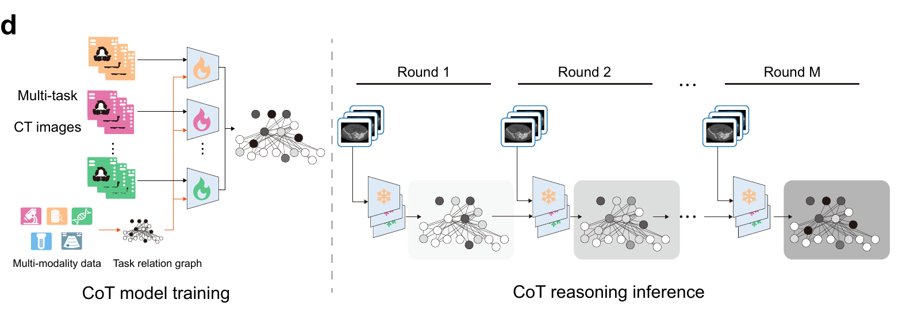
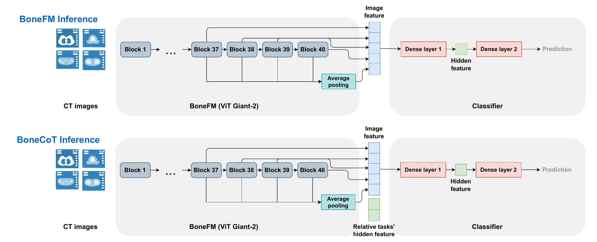
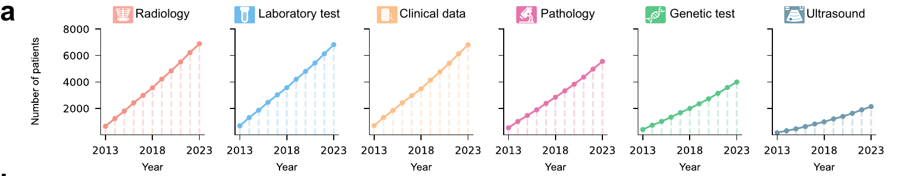
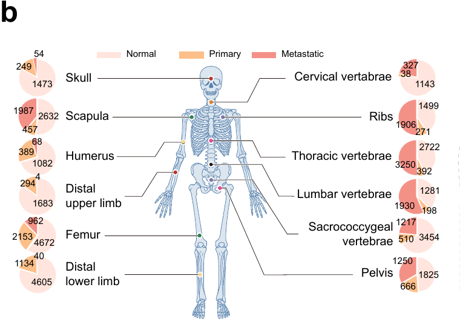
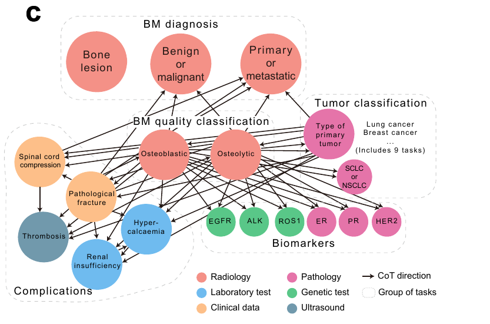
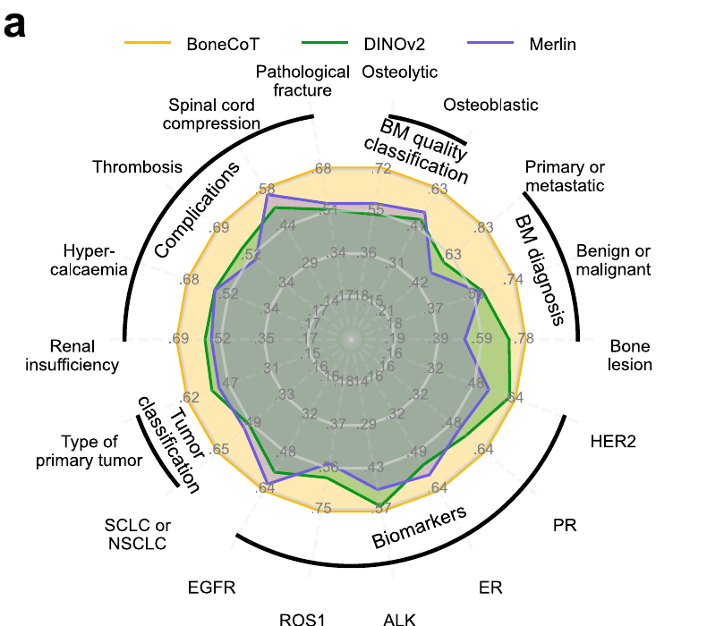
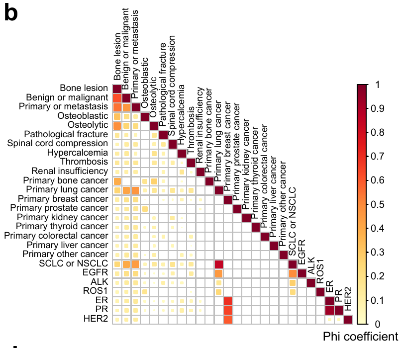

Bone-window CT input
CT images are prepared around bone structures with WL 300 and WW 1500 before being loaded by the public inference code.
A whole-body skeleton foundation model for bone metastases, guided by clinician-derived chain-of-thought dependencies and validated across multiple centres.

BoneCoT separates representation learning, task-specific modelling, and clinician-derived dependency reasoning so the public release can be used as a code and model reference without exposing private clinical data.
CT images are prepared around bone structures with WL 300 and WW 1500 before being loaded by the public inference code.
BoneFM provides skeleton-focused visual representations for downstream bone lesion and metastasis tasks.
Local users can connect their own de-identified manifests and task checkpoints through the released configuration templates.
BoneCoT uses task dependencies curated from clinical reasoning to support downstream inference for bone-related disease assessment.

The public inference path assumes that raw CT data have already been converted into de-identified image slices. The key public convention is the bone-window normalization used before PIL loading and ImageNet-style tensor normalization.
| Window level | 300 |
|---|---|
| Window width | 1500 |
| Mapping | clip((HU - (WL - WW / 2)) / WW, 0, 1) |
| Default crop | 518 |
| Model path | finetune/checkpoints/BoneFM.pth |
The repository is code-first. Large weights move to Hugging Face, and sensitive assets stay outside public documentation.
This page intentionally shows only the core orientation artwork and the Fig. 2a-b summary panels. Additional experimental result figures are kept out of the public landing page.





@article{bonecot2026,
title = {BoneCoT: multicentre validation of a whole-body skeleton foundation model for bone metastases guided by clinician-derived chain of thought},
journal = {Nature Biomedical Engineering},
year = {2026},
doi = {10.1038/s41551-026-01736-1}
}